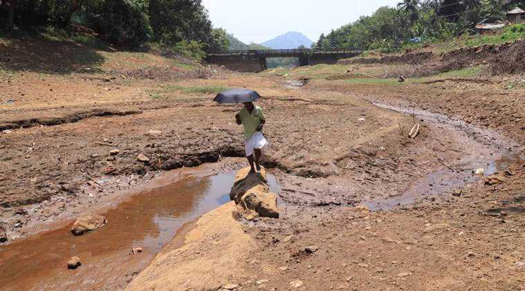
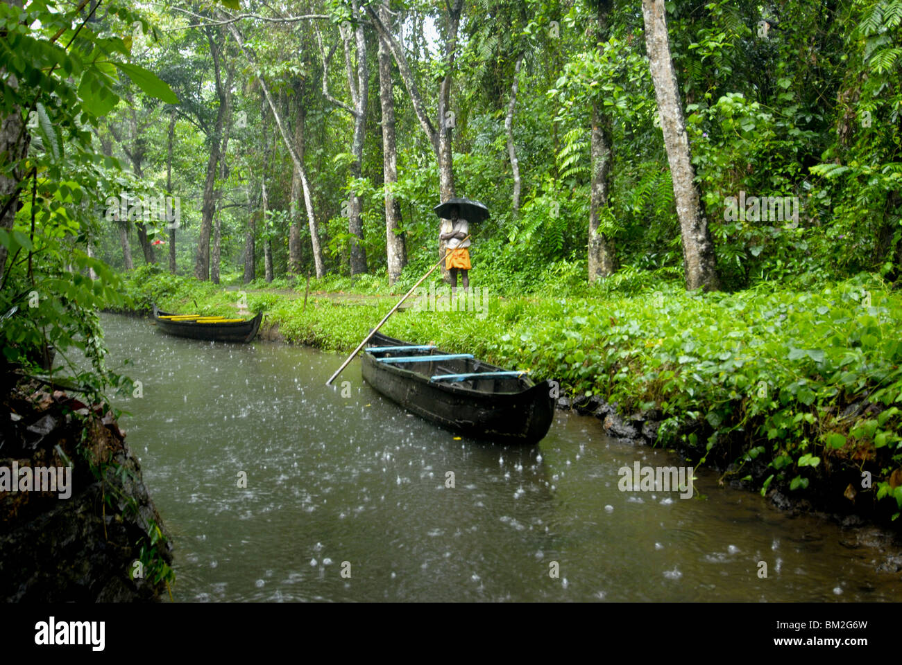
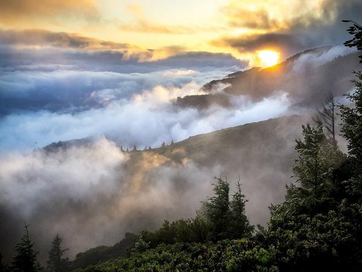

Explore seasons in Kerala
Summer (March - May)
The summer season in Kerala begins towards the end of February. The weather is humid in the plains and coastal areas. The temperature remains high throughout the day, even in the night. The average maximum temperature hovers around 35°C, and the minimum temperature is around 28°C. In the hills, however, it is cool and pleasant. And intermittent rains, with lightning and thunder, are common.
Places to visit in kerala summer season
The Summers in Kerala aren’t favourable for an amazing tour, but you can visit the hill stations. It is also the best season if you don’t like crowded tourist spots. Some places to visit in summer are picturesque hill stations like Munnar, Thekkady and Ponmudi. Trekking, hiking and biking are among the various exciting activities you can take part in, apart from enjoying the views. Gavi and Vagamon are two other high-altitude destinations worth your time to explore the natural beauty of Kerala. You can also enjoy a boat-ride in the backwaters of Alleppey during the summer season.
Summer Travel Tips for Kerala
Monsoon (June - September)
Kerala enjoys two monsoon seasons. And one of them begins by the end of June. This is known as the south west monsoon and it is the main rainy season in Kerala. While the weather remains humid during this time of the year, cool breeze from south-west and refreshing showers replace the scorching Sun. The south west monsoon or Edavappathy is characterised by torrential rains. The rivers are full of water, and the entire region gets a lush green cover. The average maximum temperature during the season is 30°C, and the minimum temperature is around 20°C. This monsoon season goes away by mid-August, leaving a pleasant weather with occasional rainfall. Kerala monsoon season returns in October with heavy downpours, accompanied by thunder and lightning. It is the retreating monsoon season, and it is known as the north east monsoon or Thulavarsham. And even with heavy rainfall, the days remain hot and humid. The average maximum temperature is 35°C, and the minimum revolves around 28°C during the north east monsoon season. It lasts until the beginning of December.
Places to visit in Kerala Monsoon
During the rainy season in Kerala, most of the outdoor activities remain closed. But it is the best season for a Kerala visit at affordable rates. Also, Ayurvedic treatments are available at affordable rates during the monsoon season. And places like Kochi, Munnar and Thekkady have some of the best Ayurvedic spas in Kerala. You can also find plenty of them in Trivandrum. Moreover, hill stations like Munnar and Vagamon look fresher and more beautiful during this season. And waterfalls cascade down at full force. Enjoying backwater boat cruises, watching boat races and taking a tour of spice plantations are among the activities you can take during monsoon season.
Monsoon Travel Tips for Kerala
Winter (October - February)
The temperature starts falling during the latter part of November, as the north east monsoons recede. Although the temperature in Kerala doesn’t vary much during seasons, it is cooler during the winter months. Humidity levels are low and so are the chances of rainfall. The average maximum temperature is 28°C, and the minimum is around 18°C. In the mountainous regions, the maximum averages at around 25°C, and the minimum is around 10°C. It is cold during the morning and evening hours, and the temperature may fall further during the nights.
Places to visit in Kerala Winter
Winter is the peak season for Kerala tourism. It is also the most favourable season to indulge in various activities and sightseeing. You can enjoy the misty backwaters of Alleppey and Kumarakom or go for tea estate safari in Munnar during the winters. The winter season also allows for a soothing visit to beaches in Kovalam and wildlife safari in Thekkady. In winter, you can explore all the amazing tourist spots of Kochi, Trivandrum and other places without worrying about humidity, scorching sun or heavy rainfall.
Winter Travel Tips for Kerala
What is the best Season to visit Kerala?
Kerala is among the most beautiful tourist destinations in India, and it has something to offer all year-round. However, the best Kerala season for tourism is during the winter season, from December to February. Many tourists also come to Kerala in October-November, during the north east monsoon season. Kerala tourism season, thus, begins in October and ends towards March. It is the peak season; and the best time to visit Kerala. From October to March, the plains and coastal areas have a comfortable climate and refreshing weather. So, whether you want to stroll around the beaches, explore magnificent temples of Kerala or go for wildlife safaris, the winter season offers a perfect opportunity to do so. You can also visit hill stations to enjoy the panoramic misty views of nature. The summer season and south-west monsoon season are off season for Kerala tourism. But monsoon is considered as the Kerala houseboat season. As the rivers start overflowing, the houseboat cruises in the backwaters of Kerala offer enchanting views of the region. Monsoon is also the cheapest season to visit Kerala and get Ayurvedic treatments. Hotels, resorts and homestays provide hearty discounts and lucrative offers for the tourists. And you can save on air tickets too. Also, there are fewer tourists during the monsoon season of Kerala. So, you can relax at beaches, enjoy a serene trip to the backwaters and get unhindered views of the lush green hills during this time.
How to reach Kerala?
Kerala is a beautiful tropical state in the southern part of India. It boasts of beaches, hills, waterfalls and a variety of wildlife. It is also known for its colourful festivals and tongue-tingling cuisines. And Kerala is accessible from all parts of the country and the world.
By Road – A road trip along the coastal sands is the best way to reach Kerala. A network of highways connects it to the rest of India. Major cities like Kochi and Trivandrum are about 2500 km away from Delhi, 1500 km from Mumbai and about 500 km from Bangalore. And you can drive your car or hire a cab from all the major cities. Regular buses, from standard seaters to luxury sleeper coaches, are also available from nearby towns to Kochi, Trivandrum, Munnar and other major tourist destinations of Kerala.
By Rail – A train journey to Kerala also guarantees a memorable experience along the coastline of the state. Trains are the most convenient and comfortable way to reach Kerala. They reach everywhere except for the hilly areas, and they run from all major cities and towns of the country. Express trains are available to the main railway stations like Alappuzha, Ernakulam, Kozhikode, Kottayam and Thiruvananthapuram among others. You can also book luxury trains like Maharaja’s Express and the Golden Chariot to enjoy the mesmerising views and explore the landmarks of Kerala.
By Air – Kerala has four international airports which make it easy to explore the amazing places. Airports at Trivandrum and Cochin are among the busiest ones, and they connect Kerala to all the major airports in the country. You’ll also find regular flights from international destinations like Colombo, Dubai and Singapore. Trivandrum International Airport is the oldest airport and connects coastal landmarks like Kovalam to the world. It is also close to hill stations like Munnar. Cochin International Airport is the busiest airport in the state. It connects you to the backwaters in Alleppey and Kumarakom, and the hilly areas too. Kozhikode airport and Kannur airport are the two other airports in Kerala providing convenient connectivity to other places.
How to travel within Kerala?
Whichever airport or railway station you arrive at, you’ll find plenty of buses, taxis and private cabs to connect to your next destination. And if you plan to bring your car or drive a rental, you can take it to anywhere within the state. Buses, flights and trains also connect one place to the other within Kerala. In many cities, rental bikes too, are available to explore the region and dive into the spectacular views. Motorboats and ferries also connect many places through the water channels. In Kochi, you can ride the metro trains to explore the culture of the city. However, the best way to explore all the popular places to visit in Kerala in the most comfortable manner is to hire a cab from top car rental companies in Kerala. This way you need not worry about getting down at one place and again searching for another transportation option to reach your next sightseeing place. You can also opt for our Kerala Tour packages that help you plan your Kerala tour in the best way possible. We at Kerala Tourism, a division of Holidays DNA offer various packages that you can choose from depending on your budget, duration and interests. Feel free to fill the Contact Us form and we will get back to you at the earliest.